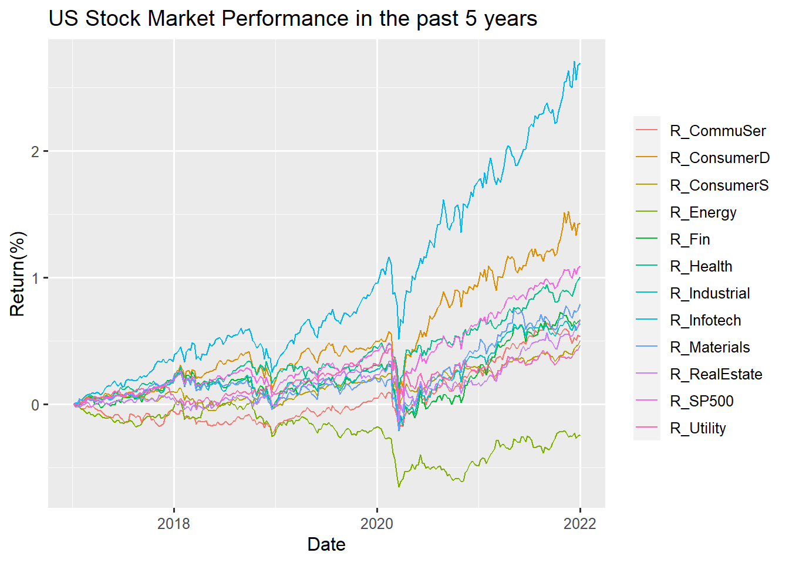
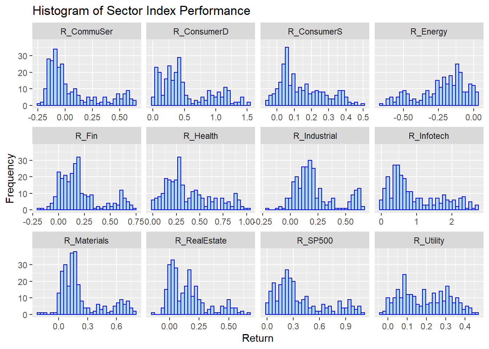
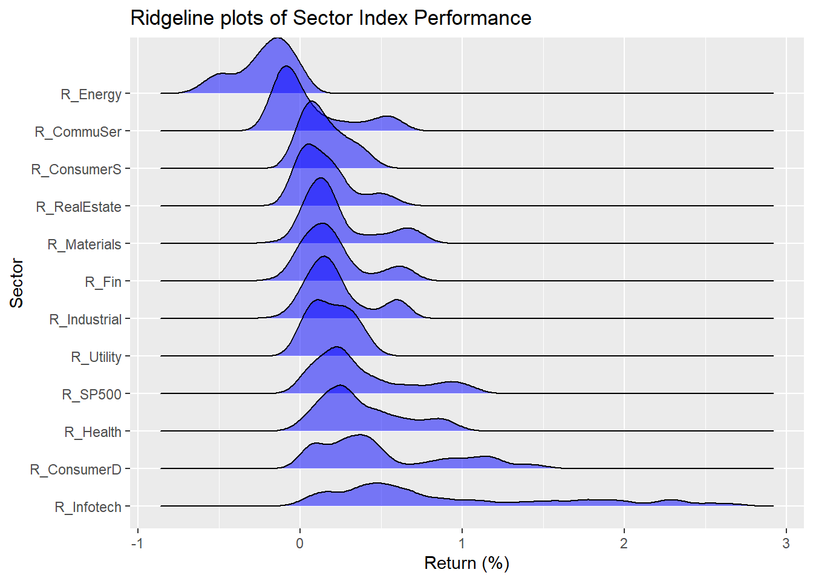

Chapter 5 Results
5.1 US Whole Stock Market
Start to explore
5-year weekly return :

For the past 5 years, Most sectors have positive returns except the Energy Sector. Compared to the past early years, the Energy Sector has had a huge impact since 2020. The reason behind might account from the Covid-19 explosion. And we could have a direct observation vertically of year 2020, almost all sectors slumped on their returns, However, Information Technology and Consumer Discretionary Sector recover their returns shortly and show an increase trend until 2022. From the overall perspective, it is absolutely true that Information Technology has more returns and gains compared to the others. The differences on returns is nearly more than 1% of Information Technology compared to the second most sector Consumer Discretionary. Therefore, we could say that Information Technology indeed has better performance whether from horizontal or vertical span. Until 2022, the return of the Energy Sector still is negative. Therefore, if investors want to make profit in the short-term, the Energy Sector might not be a good choice.

From this histogram, most sectors are right-skewed, which is rational to understand. On the right side of the graph, the frequencies of observations are lower than the frequencies of observations to the left side. This indicates that most of the time, you could earn a small amount of profit, but the probability of earning high returns is low relative to all industries. It’s obvious in the Consumer Staples and Consumer Discretionary sector. The distribution of return in the Industrial sector is a relatively normal distribution. This tells us in most cases you could earn a relatively good percentage of returns. But, the probability of earning extremely high returns and extremely low returns is also in a low number. The histogram of Energy returns is opposite from the others–it is left skewed. But when we have a close look at the scale, the starting point of x-axis is negative. The high frequency range is inside -0.25 to 0 returns. Therefore we could conclude that the returns of the Energy sector still mostly focus on the negatives. It matches with what we mentioned above, the Energy Sector might not be a good industry to invest in.
The boxplot gives us the direct observation on the median of returns and the outliers. Information Technology all have positive returns which means if you invest in this sector, in 5 years, your returns must be positive. And the Information Technology Sector has large outliers. Although the percentage of returns concentrated in 0.5%-1.5%, investors also have opportunities to earn returns more than 2%. The return of SP500 index, Information Technology, Health and Consumer Discretionary have no negative returns overall which might give investors some insights on investing in those industries. Utility, Real Estate, Materials and Industrial sectors have the smallest IQR rather than other sectors. And again, the Energy Sector is the one that has the least good return performance. Most of the time, the range of returns under positive percentage.

Info-tech perform best.
5.2 SP500 Constitutent
## # A tibble: 6 x 25
## Sector `2021` `2020` `2021_CHANGE` high election_1 covid_low `pre-covid_hi`
## <chr> <dbl> <dbl> <dbl> <dbl> <dbl> <dbl> <dbl>
## 1 Energy 0.0267 0.0228 0.172 0.0250 0.0201 0.0248 0.0374
## 2 Materi~ 0.0256 0.0263 -0.0244 0.0251 0.0272 0.0240 0.0249
## 3 Indust~ 0.0778 0.0840 -0.0734 0.0840 0.0860 0.0784 0.0889
## 4 Consum~ 0.125 0.127 -0.0140 0.123 0.115 0.102 0.0989
## 5 Consum~ 0.0588 0.0651 -0.0976 0.0582 0.0702 0.0805 0.0703
## 6 Health~ 0.133 0.135 -0.0132 0.133 0.141 0.150 0.138
## # ... with 17 more variables: election_2 <dbl>, bear_low <dbl>,
## # bull_high <dbl>, prior_bear_low <dbl>, prior_bull_high <dbl>, 2019 <dbl>,
## # 2018 <dbl>, 2017 <dbl>, 2016 <dbl>, 2015 <dbl>, 2014 <dbl>, 2013 <dbl>,
## # 2012 <dbl>, 2011 <dbl>, 2009 <dbl>, 1999 <dbl>, 1989 <dbl>
In the consistent SP500 index, all 11 sectors are included but with different weights. The larger the area of the rectangular, the higher the percentage takes place in the constituent inside SP500. Information Technology takes the highest proportion inside SP500. The second highest percentage take place sector is Consumer Discretionary. Energy and Materials takes almost the same percentage. And Real Estate and Utilities almost take the same proportion. It’s hard to identify which sector has the least percentage in SP500 among Energy, Materials, Real Estate and Utilities from this graph.
We separate the sector into 2 Categories, one is “High-weighted”, which proportion is over 10%, another is “Low-weighted”
Plot the interactive plot to see the change of weight in different sector.
## # A tibble: 6 x 16
## Sector `1989` `1999` `2009` `2011` `2012` `2013` `2014` `2015` `2016` `2017`
## <chr> <dbl> <dbl> <dbl> <dbl> <dbl> <dbl> <dbl> <dbl> <dbl> <dbl>
## 1 Energy 0.126 0.0555 0.115 0.123 0.110 0.103 0.0844 0.0650 0.0756 0.0607
## 2 Materia~ 0.0790 0.0300 0.0360 0.0350 0.0362 0.0350 0.0317 0.0276 0.0284 0.0300
## 3 Industr~ 0.144 0.0991 0.102 0.107 0.101 0.109 0.104 0.100 0.103 0.103
## 4 Consume~ 0.146 0.127 0.0958 0.107 0.115 0.125 0.121 0.129 0.120 0.122
## 5 Consume~ 0.116 0.0717 0.114 0.115 0.106 0.0976 0.0980 0.101 0.0937 0.0820
## 6 Health ~ 0.0844 0.0931 0.126 0.119 0.120 0.130 0.142 0.152 0.136 0.138
## # ... with 5 more variables: 2018 <dbl>, 2019 <dbl>, 2020 <dbl>, 2021 <dbl>,
## # Category <fct>This graph gives us a comprehensive overview on the proportion change of each different section included in index SP500 over time. For example the most obvious one that we could read from the chart knowing that the percentage of Information Technology increased a huge from 1989 to 1999 and took the first place of components in SP500 until now. Industries Sector used to have a high percentage in SP500. In 1989 it reached the peak number of proportion but gradually declined as time went by and until now it has become one of the least component in SP500. The Materials Sector is also another sector that declines over time. What’s different from the Industrials Sector is that the Materials Sector’s percentage declined from the beginning of 1989. And the tread becomes steady from 2016 to 2021.
Investigate weight in different situations:
## # A tibble: 6 x 6
## Sector `2021` `2020` covid_low election_1 `pre-covid_hi`
## <chr> <dbl> <dbl> <dbl> <dbl> <dbl>
## 1 EN 0.0267 0.0228 0.0248 0.0201 0.0374
## 2 M 0.0256 0.0263 0.0240 0.0272 0.0249
## 3 I 0.0778 0.0840 0.0784 0.0860 0.0889
## 4 CD 0.125 0.127 0.102 0.115 0.0989
## 5 CS 0.0588 0.0651 0.0805 0.0702 0.0703
## 6 HC 0.133 0.135 0.150 0.141 0.138## # A tibble: 6 x 3
## Sector Group Freq
## <chr> <chr> <dbl>
## 1 EN 2021 0.0267
## 2 M 2021 0.0256
## 3 I 2021 0.0778
## 4 CD 2021 0.125
## 5 CS 2021 0.0588
## 6 HC 2021 0.133
In these two plots, we also compare the proportion change of each sector in specific time periods. We can see that there exist slight change during specific time. For example, during the election period, the proportion of market value of health-care/Commodity Discretionary/Information Tech sector increase, which may result from the new policy and regulations propose during that time. Also, at the Covid-19 period, the proportion of Health-care sector is higher than normal year. Making investing Strategies often needs to refer to the macro environment and special events happened.
5.3 PE-ratio Selection
The price-to-earnings ratio is one of the most widely used metrics for investors and analysts to determine tock valuation.
In short, the P/E shows what the market is willing to pay today for a stock based on its past or future earnings.
A higher P/E ratio shows that investors are willing to pay a higher sshare price today because of growth expectations in the future. The average P/E for the S&P 500 has historically ranged from 13 to 15.
## Name Sector Price Earnings_Share
## 1 3M Company Industrials 222.89 7.92
## 2 A.O. Smith Corp Industrials 60.24 1.70
## 3 Abbott Laboratories Health Care 56.27 0.26
## 4 AbbVie Inc. Health Care 108.48 3.29
## 5 Accenture plc Information Technology 150.51 5.44
## 6 Activision Blizzard Information Technology 65.83 1.28
## Price_Earnings
## 1 24.31
## 2 27.76
## 3 22.51
## 4 19.41
## 5 25.47
## 6 31.80The first glance of SP500 company P/E ratio shows us that most company’s EPS concentration is around 0-10 corresponding to the price lower than 250. There are some obvious outliers in the chart. One is high earnings per share but with corresponding higher price. However, the one with higher earnings per share but lower Price might be the good one for investors to invest because these kinds of companies have higher cost-effectiveness. Companies with median earnings per share but high prices are those we need to avoid to invest in. We could see directly that inside the component of SP500, there are not many low cost-effectiveness stocks but happily included some high cost-effectiveness companies to invest in. Therefore, we could conclude that investing in SP500 is a good choice and the stock choice inside SP500 is rational.
The interactive plot of this plot that focuses on IT, Health Care, Consumer Discretionary and Financials provides us with more detailed information of each company. Sherwin-Williams is a company from Materials Sector, it has the largest EPS but also with highest price. There are two companies from Industrials with higher EPS but relative lower price, these are the companies that are worth us to invest in. You could check out each EPS or Price range that you are interested in and to find out what companies are best fit for you to invest to meet your expectations by using this interactive plot.
Focus on IT/Health Care/Consumer Discretionary/Financials
## # A tibble: 6 x 13
## Date R_SP500 R_CommuSer R_ConsumerD R_ConsumerS R_Energy R_Fin
## <dttm> <dbl> <dbl> <dbl> <dbl> <dbl> <dbl>
## 1 2021-12-31 00:00:00 1.09 0.532 1.43 0.503 -0.242 0.662
## 2 2021-12-24 00:00:00 1.08 0.544 1.42 0.467 -0.250 0.653
## 3 2021-12-17 00:00:00 1.03 0.506 1.33 0.457 -0.267 0.635
## 4 2021-12-10 00:00:00 1.07 0.525 1.44 0.441 -0.228 0.656
## 5 2021-12-03 00:00:00 0.993 0.482 1.38 0.392 -0.255 0.614
## 6 2021-11-26 00:00:00 1.02 0.524 1.43 0.398 -0.249 0.646
## # ... with 6 more variables: R_Health <dbl>, R_Industrial <dbl>,
## # R_Infotech <dbl>, R_Materials <dbl>, R_RealEstate <dbl>, R_Utility <dbl>## # A tibble: 6 x 5
## Date R_SP500 Type Return Relative_Return
## <dttm> <dbl> <chr> <dbl> <dbl>
## 1 2021-12-31 00:00:00 1.09 R_Infotech 2.69 2.46
## 2 2021-12-31 00:00:00 1.09 R_Health 1.00 0.919
## 3 2021-12-31 00:00:00 1.09 R_ConsumerD 1.43 1.31
## 4 2021-12-31 00:00:00 1.09 R_Fin 0.662 0.605
## 5 2021-12-24 00:00:00 1.08 R_Infotech 2.67 2.49
## 6 2021-12-24 00:00:00 1.08 R_Health 0.982 0.913Since IT, Health Care, Consumer Discretionary and Financials take most porpotation in the constitution of SP500. Therefore we want to say which industry has higher returns compared to the market(SP500). Information Technology with purple definitely represents higher returns than the market and almost all the companies within this industry have higher returns, therefore investing in this sector would be a good choice. However, we say that higher returns sometimes also represent higher risks, information technology might not be a good choice for a moderate investor. The red dots represent the Consumer Discretionary Sector. In this area, the return of the market is similar to the sector; this means if the market goes well then in general, the returns on the Consumer Discretionary Sector would also be relatively good. And there is not much risk which is suitable for most moderate investors. This is also one sector that we recommend the most to invest in. Health and Financials sector’s returns are relatively lower than the market although some of them are in the area with Consumer Discretionary Sector which is recommended. However, from a board perspective, most of the companies in Health and Financials cannot receive higher returns in the long-run compared to the whole market. Some companies even have negative returns.
5.4 IT Industry Specific Analysis
Pick up IT Companies
## Symbol Name Sector Price Price_Earnings
## 1 MMM 3M Company Industrials 222.89 24.31
## 2 AOS A.O. Smith Corp Industrials 60.24 27.76
## 3 ABT Abbott Laboratories Health Care 56.27 22.51
## 4 ABBV AbbVie Inc. Health Care 108.48 19.41
## 5 ACN Accenture plc Information Technology 150.51 25.47
## 6 ATVI Activision Blizzard Information Technology 65.83 31.80
## Dividend_Yield Earnings_Share X52_Week_Low X52_Week_High Market_Cap
## 1 2.3328617 7.92 259.770 175.490 138721055226
## 2 1.1479592 1.70 68.390 48.925 10783419933
## 3 1.9089824 0.26 64.600 42.280 102121042306
## 4 2.4995599 3.29 125.860 60.050 181386347059
## 5 1.7144699 5.44 162.600 114.820 98765855553
## 6 0.4319032 1.28 74.945 38.930 52518668144
## EBITDA Price_Sales Price_Book
## 1 9048000000 4.390271 11.34
## 2 601000000 3.575483 6.35
## 3 5744000000 3.740480 3.19
## 4 10310000000 6.291571 26.14
## 5 5643228000 2.604117 10.62
## 6 2704000000 10.595120 5.16
## SEC_Filings
## 1 http://www.sec.gov/cgi-bin/browse-edgar?action=getcompany&CIK=MMM
## 2 http://www.sec.gov/cgi-bin/browse-edgar?action=getcompany&CIK=AOS
## 3 http://www.sec.gov/cgi-bin/browse-edgar?action=getcompany&CIK=ABT
## 4 http://www.sec.gov/cgi-bin/browse-edgar?action=getcompany&CIK=ABBV
## 5 http://www.sec.gov/cgi-bin/browse-edgar?action=getcompany&CIK=ACN
## 6 http://www.sec.gov/cgi-bin/browse-edgar?action=getcompany&CIK=ATVI## Symbol Name Sector Price
## 1 AAPL Apple Inc. Information Technology 155.15
## 2 GOOGL Alphabet Inc Class A Information Technology 1007.71
## 3 GOOG Alphabet Inc Class C Information Technology 1001.52
## 4 MSFT Microsoft Corp. Information Technology 85.01
## 5 FB Facebook, Inc. Information Technology 171.58
## 6 V Visa Inc. Information Technology 113.86
## 7 INTC Intel Corp. Information Technology 42.75
## 8 ORCL Oracle Corp. Information Technology 46.84
## 9 CSCO Cisco Systems Information Technology 38.77
## 10 MA Mastercard Inc. Information Technology 160.62
## 11 IBM International Business Machines Information Technology 147.59
## Price_Earnings Dividend_Yield Earnings_Share X52_Week_Low X52_Week_High
## 1 16.86 1.5795412 9.20 180.10 131.1200
## 2 31.48 0.0000000 22.27 1198.00 824.3000
## 3 40.29 0.0000000 22.27 1186.89 803.1903
## 4 25.76 1.8747908 2.97 96.07 63.2200
## 5 27.90 0.0000000 5.39 195.32 132.4400
## 6 32.72 0.7020477 2.80 126.88 84.8800
## 7 12.32 2.6548672 1.98 50.85 33.2300
## 8 18.81 1.5551463 2.20 53.14 40.0100
## 9 17.87 2.8755577 1.91 42.98 30.3600
## 10 34.99 0.5926628 3.65 177.11 105.8000
## 11 10.67 3.8999026 6.11 182.79 139.1300
## Market_Cap EBITDA Price_Sales Price_Book
## 1 809508034020 7.9386e+10 3.458609 5.66
## 2 733823966137 3.4217e+10 6.801692 4.70
## 3 728535558140 3.2714e+10 6.772653 4.67
## 4 689978437468 4.1079e+10 7.113097 9.49
## 5 523423036576 2.3624e+10 13.241967 7.08
## 6 270038723213 1.3086e+10 14.433654 9.40
## 7 211536000000 2.6247e+10 3.348876 3.34
## 8 202302349740 1.6545e+10 5.256165 3.56
## 9 199425716482 1.5447e+10 5.484418 3.07
## 10 187102014193 7.1130e+09 15.020556 26.93
## 11 142433003505 1.6557e+10 1.817167 7.70
## SEC_Filings
## 1 http://www.sec.gov/cgi-bin/browse-edgar?action=getcompany&CIK=AAPL
## 2 http://www.sec.gov/cgi-bin/browse-edgar?action=getcompany&CIK=GOOGL
## 3 http://www.sec.gov/cgi-bin/browse-edgar?action=getcompany&CIK=GOOG
## 4 http://www.sec.gov/cgi-bin/browse-edgar?action=getcompany&CIK=MSFT
## 5 http://www.sec.gov/cgi-bin/browse-edgar?action=getcompany&CIK=FB
## 6 http://www.sec.gov/cgi-bin/browse-edgar?action=getcompany&CIK=V
## 7 http://www.sec.gov/cgi-bin/browse-edgar?action=getcompany&CIK=INTC
## 8 http://www.sec.gov/cgi-bin/browse-edgar?action=getcompany&CIK=ORCL
## 9 http://www.sec.gov/cgi-bin/browse-edgar?action=getcompany&CIK=CSCO
## 10 http://www.sec.gov/cgi-bin/browse-edgar?action=getcompany&CIK=MA
## 11 http://www.sec.gov/cgi-bin/browse-edgar?action=getcompany&CIK=IBMThe top4 Companies are Apple/GooGle/MSFT/FB, we have imported the needed data in the previous section.
From the Correlation matrix, we firstly are able to observe that the returns of all stocks nearly follow normal distribution. And Apple has a strong positive correlation with Google and Microsoft. Apple has a positive correlation with Facebook too but the relationship is less intense compared to the other 2 companies. The return of Microsoft has an obvious positive slope with Facebook which represents the trend of these two companies moving together. It’s not hard to understand since these 4 stocks are under one same sector. And in the stock market, the passionate and investment insight towards one specific industry would cause the change of return within this sector. When there are more capital flows into this industry, there is a high probability the stocks belonging to this sector will increase and vice versa. Also, these 4 companies are top 4 inside the Technology Industry, investors would prefer big companies and therefore the correlation between those stocks would have a strong connection.
## Apple_return Google_return MSFT_return FB_return
## Apple_return 1.00 0.58 0.70 0.57
## Google_return 0.58 1.00 0.67 0.61
## MSFT_return 0.70 0.67 1.00 0.52
## FB_return 0.57 0.61 0.52 1.00This graph further shows that what we mentioned above directly provides us specific numbers of correlation. And again, Microsoft has the strongest correlation(0.7) with Apple. Within the IT industry of those 4 biggest companies, the least correlation is between Microsoft and Facebook which is only 0.52. Therefore, if you are an investor that specifically has a long position in the Technology industry, investing in Microsoft and Facebook separately would help you to manage risk by diversifying returns. And investing Microsoft together with Apple in the market would have a “leverage” result to help you gain more since the relationship of these two are strongly positive. But when one company’s returns decrease, another one has a high probability to decrease as well. At that time, the loss would also be doubled.